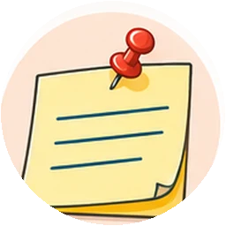
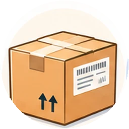

etwa 15 Minuten · lesen, hören, prüfen
Drei Fragen bei jedem bekannten Wort
- Finden: Wo steht das Wort im Text?
- Zuordnen: Zu wem oder wozu gehört es dort? Zu einer Person, einer Zahl, einer Handlung, einer Zeit?
- Vergleichen: Sagt die Aussage dasselbe?
Ein bekanntes Wort kann richtig sein. Es kann auch falsch sein. Entscheidend ist der Zusammenhang.

Aus dem ProtokollLesen Sie den Text. Prüfen Sie dann jede Aussage. Das fett gedruckte Wort steht auch im Text.
Teambesprechung Einkauf · Protokoll
Nora Seidel berichtet: Die Druckerei hat 500 Flyer für die Messe bestätigt. Pawel Nowak meldet, dass im Lager noch 200 Flyer vom letzten Jahr liegen. Diese alten Flyer sollen ins Altpapier.
Eine Nachricht auf der Mailbox
Petra Lenz arbeitet am Empfang. Auf ihrer Mailbox ist eine Nachricht von Jonas Becker. Hören Sie die Nachricht. Sie dürfen sie zweimal hören. Prüfen Sie dann jede Aussage.
Die Nachricht zum Nachlesen
Hallo Petra, hier ist Jonas. Herr Krause von der Firma Hollmann kommt heute nicht um zehn, sondern erst um zwölf. Um zehn habe ich ja die Telefonkonferenz mit Frau Melnyk. Kannst du bitte für Herrn Krause einen Parkplatz reservieren? Danke!
etwa 15 Minuten · Informationen ordnen, dann prüfen
Erst ordnen, dann prüfen: Wenn Sie wissen, was zu wem gehört, fallen Sie auf kein bekanntes Wort herein.
Zwei Schulungen im Dezember
Lesen Sie die E-Mail. Sie dürfen im Text so oft nachsehen, wie Sie möchten.
- Von
- Samira Haddad
- An
- Team Verwaltung
- Betreff
- Erste Hilfe und Brandschutz
Liebe Kolleginnen und Kollegen,
im Dezember bieten wir zwei Schulungen an. Der Erste-Hilfe-Kurs ist am Dienstag, dem 8. Dezember, und dauert einen ganzen Tag. Dafür haben wir zwölf Plätze. Die Brandschutzschulung am Donnerstag, dem 10. Dezember, dauert nur zwei Stunden. Dort ist Platz für alle.
Für den Erste-Hilfe-Kurs melden Sie sich bitte bis Freitag bei Olena Karpenko an. Fragen zur Brandschutzschulung beantwortet Pawel Nowak. Er ist unser Brandschutzhelfer.
Viele Grüße
Samira Haddad
Schritt 1: Was gehört zusammen? Klicken Sie links, dann rechts.
Schritt 2: Stimmt die Aussage?

Zwei LieferungenPawel Nowak hat Nora Seidel eine Nachricht geschickt. Sehen Sie sich zuerst Schritt 1 an. Hören Sie dann die Nachricht und verbinden Sie schon beim Hören. Versuchen Sie es mit einmal Hören. Wenn es nicht klappt, hören Sie noch einmal.
Schritt 1: Was gehört zusammen? Verbinden Sie beim Hören.
Schritt 2: Stimmt die Aussage?
Die Nachricht zum Nachlesen
Hallo Nora, hier ist Pawel aus dem Lager. Kurz zu den Lieferungen morgen: Die Kartons von der Firma Brandt kommen um acht Uhr, die Druckerpatronen erst um elf. Die Kartons nimmt Finn an, ich bin morgens beim Arzt. Die Patronen nehme ich dann selbst an. Und noch was: Bei den Patronen fehlen zwanzig Stück. Kannst du das bitte mit dem Lieferanten klären? Danke dir!
etwa 15 Minuten · eine Aufgabe wie in der Prüfung
Das Protokoll vom Verkauf
Lesen Sie das Protokoll. Welche Antwort (a, b oder c) passt am besten? Begründen Sie danach Ihre Entscheidung.
Teambesprechung Verkauf · 24. November · Protokoll: Olena Karpenko
TOP 1 · Neue Kundin. Jonas Becker berichtet: Die Stadtverwaltung Bonn hat 40 Bürostühle bestellt. Geliefert wird im Januar. Eine zweite Bestellung über 60 Stühle ist möglich, wenn der Stadtrat im Februar zustimmt.
TOP 2 · Messe. Frau Melnyk dankt dem Team. Am Stand gab es 150 Gespräche. Daraus sind bis jetzt 12 Aufträge entstanden.
TOP 3 · Urlaub. Jonas Becker ist vom 21. bis 30. Dezember im Urlaub. Seine Kunden betreut in dieser Zeit Nora Seidel. Fragen zu Rechnungen beantwortet wie immer die Buchhaltung.